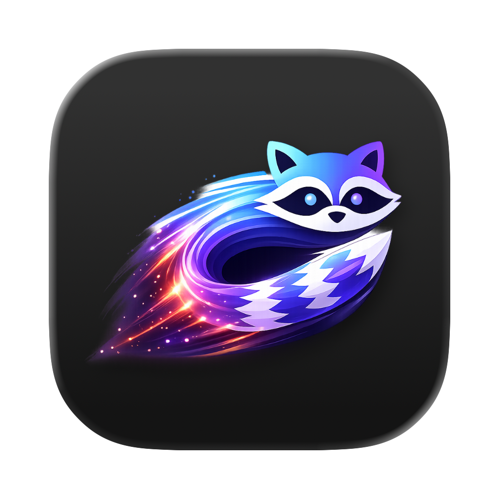

con
terminal with AI harness
GPU fast. Agent built in.
A fast, humane terminal for SSH, tmux, and agent-native workflows.
Nowledge Labs
we build the knowledge layer.

A fast, humane terminal for SSH, tmux, and agent-native workflows.